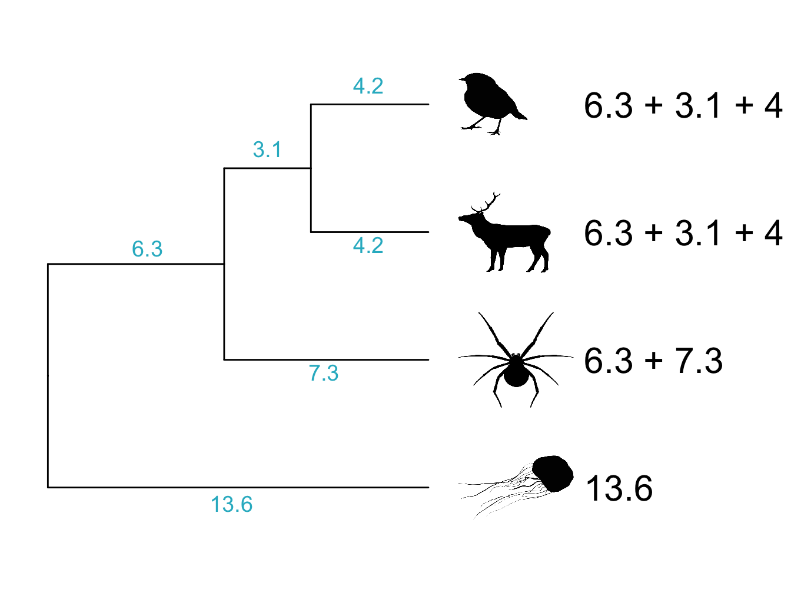
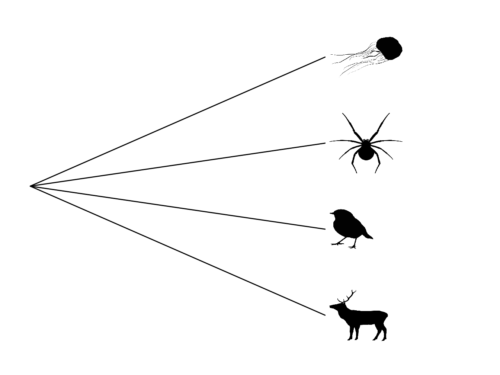
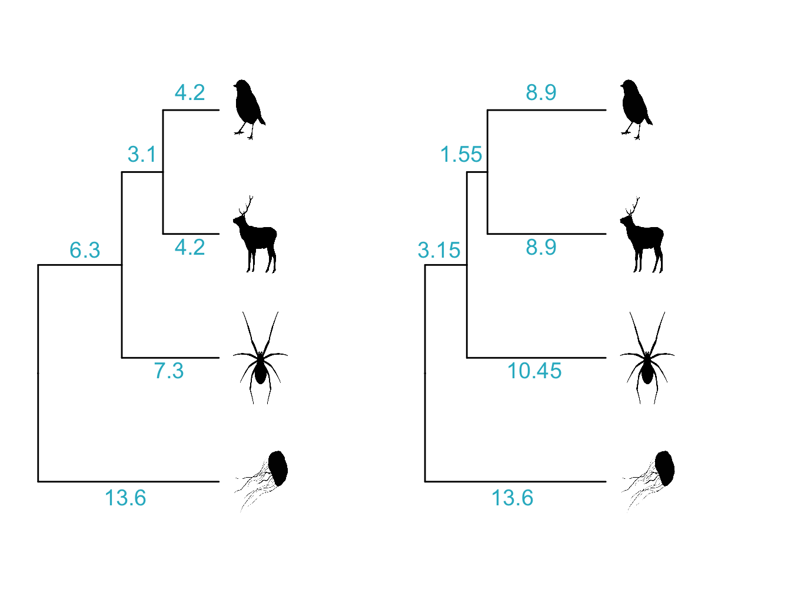
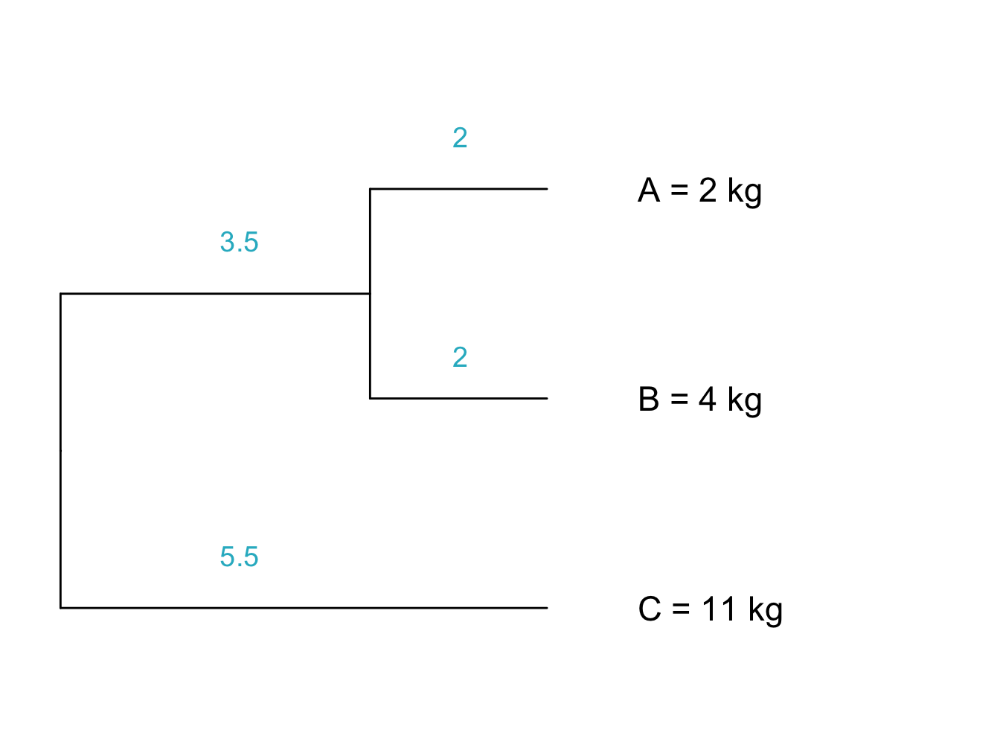

Chapter 3 Foundations 2: Introduction to models of trait evolution and phylogenetic signal
[CHAPTER OPENING STYLE STILL TBC AND WILL BE CONSISTENT ACROSS CHAPTERS. CURRENT CONTENT IS PLACEHOLDER ONLY]
The previous chapter introduced you to the basic building blocks of comparative methods; phylogenies and trait data. We are now going to shift gears and think about some of the theory and models underpinning comparative methods.
At the very simplest level, comparative methods are interested in how traits are distributed across trees, and how these traits change through time. Are there clusters in the tree where traits of the species at the tips are similar or identical? Or are traits spread evenly across the tree? How quickly do trait values change through time? etc.
The models we use to describe how traits change will vary depending on whether our traits are continuous (e.g. body size, leaf area) or discrete (e.g. presence or absence of a tail, growth form, number of legs).
This chapter will introduce you to the basic ways we work with traits and trees. It will cover:
- Modelling continuous traits.
- the Brownian Motion (BM) model of evolution.
- Modelling discrete traits.
- ARD, ER, SYM
- Phylogenetic signal
3.1 Modelling continuous traits - the Brownian Motion model of evolution
For continuous traits, the most commonly used model of trait evolution is the Brownian motion model, and many more complex models have been built upon it. Therefore we will spend some time discussing it here. If you’re already familiar with the Brownian model you might want to skip to the summary at the end of the section just to check that you recall all the key features of the model. Otherwise, join me on an exploration of imaginary cats!
3.1.1 An introduction to Brownian Motion
The Brownian model or BM model (Cavalli-Sforza and Edwards 1967; Felsenstein 1973) is assumed to be the underlying mode of evolution in the majority of phylogenetic comparative methods (though this assumption is rarely tested; ???). It can be fully described using just two parameters \(z(0)\) and \(\sigma^2\) (sigma squared).
\(z(0)\) is the starting value of the trait we are interested in. This is the mean value for the trait seen in the ancestral population before there have been any changes to the trait. \(\sigma^2\) is the rate at which evolution (i.e. trait change) occurs. Some of you might already be wondering why we use \(\sigma^2\) here, as \(\sigma^2\) is usually used to signify variance. And you’d be right, it is a variance! But how and why?
Here’s the explanation. At the core of Brownian motion is the normal distribution (Figure 3.1). In the Brownian motion model of evolution, the amount that a trait changes over any time interval is drawn at random from a normal distribution with a mean of 0 and a variance of \(\sigma^2\). Because the mean is 0, we can draw positive numbers causing the trait to increase, we can draw negative numbers causing the trait to decrease, and we expect the mean change in the trait over time to also be 0. How large these changes are depends on the value of \(\sigma^2\). In Figure 3.1 you can see that as \(\sigma^2\) gets larger, so does the spread of the normal distribution, meaning that large values are more likely to get drawn from the distribution as \(\sigma^2\) increases, leading to larger increases or decreases in the value of the trait. This means evolution will be faster when \(\sigma^2\) is larger. Because of this, \(\sigma^2\) represents the rate of evolution, and is referred to as the Brownian rate parameter.

Figure 3.1: Three normal distributions with the same mean (0) but different variances.
Because the direction of change in trait values at each step is random, Brownian motion is often described as a random walk.
Let’s run a quick example simulation to see what is going on. Our trait can be any continuous feature of an organism, but for simplicity let’s use body mass in (imaginary!) cats. First let’s run one simulation to show how the body mass of one cat lineage changes through time under the Brownian model.
At the start, the trait value is \(z(0)\). Here we’ll start at \(time = 0\) with an ancestral cat that weighs 4 kg. The rate of evolution, or Brownian rate parameter, \(\sigma^2\), is 0.25 (like the normal distribution in Figure 3.1B).
To determine the value for body mass at \(time = 1\), we draw a random number from the normal distribution with \(mean = 0\) and \(\sigma^2 = 0.25\). In this example the value is \(-0.1533193\). So the body mass of a cat at \(time = 1\) is \(4 + -0.1533193 = 3.84668\).
To determine the value for body mass at \(time = 2\), we draw a random number from the normal distribution with \(mean = 0\) and \(\sigma^2 = 0.25\). In this example the value is \(-0.89065422\). So the body mass of a cat at \(time = 2\) is \(3.84668 + -0.89065422 = 2.95603\), recall that \(3.84668\) is the body mass at \(time = 1\).
If we continue this until we get to \(time = 10\) we get a graph that shows the evolution of the trait through time that looks like Figure 3.2 (the numbers are the body mass values, rounded to two decimal places).
Hang on, where are we getting these random numbers from? We are just using R to extract numbers from a normal distribution with mean of 0 and variance of 0.25. If you want to try this out got to R and type in rnorm(1, mean = 0, sd = sqrt(0.01)). sd is standard deviation, which is the square root of variance. Note that these numbers are drawn at random so will not be the same as the values used above.

Figure 3.2: A simple simulation showing how the body mass of cats changes through time under a Brownian model with \(z(0) = 4 kg\) and \(sigma^2 = 0.25\).
A few things to note. First, the direction of change is random, there is no trend towards increasing or decreasing body mass. Second, the changes do not depend on the changes that happened previously, i.e. an increase in body mass at time 1 does not mean an increase (or decrease) at time 2 is more or less likely. The random nature of trait changes is why the Brownian model is often referred to as a random walk. We sometimes describe it as being like a drunk person walking down the road, wobbling about but in no particular direction…
Although our examples here use t = 1, t = 2 etc. to illustrate what is happening, Brownian motion is a continuous time process, and so time does not have discrete steps in the model.
The example above includes only one simulation to give you a basic idea of what is going on. To get a better idea of the patterns we expect to see, let’s run 100 simulations instead, over a longer time period. Because the Brownian model is a random walk, we expect each simulation to be slightly different depending on the values drawn out of the normal distribution each time.
As above, we will start at \(time = 0\) with an ancestral cat that weighs 4 kg (i.e. \(z(0) = 4\)), and use \(\sigma^2\) of 0.25 as the rate of evolution (Figure 3.3A).

Figure 3.3: 100 simulations showing how the body mass of cats changes through time under a Brownian model with \(z(0) = 4 kg\) and \(sigma^2 = 0.25\) (A); and a plot showing how variance in body mass across the simulations increases linearly through time (B).
Notice how the variance in body mass (i.e. the spread of different values of body mass) increases linearly with time (it’s not perfectly linear here, but it would be if we ran more simulations; Figure 3.3B). Meaning that body mass variance is greatest over the longest time intervals. In biological terms this means we expect to see more variance in the trait values of groups that have been evolving for longer.
If we vary the value of \(\sigma^2\) we can look at the effect of changing the rate of evolution on the values of body mass we evolve in our cat simulations. If the rate of evolution is lower, then variance in body mass accumulates more slowly (Figure 3.4A); if the rate of evolution is higher, then variance in body mass accumulates more quickly (Figure 3.4C). The overall variance of the Brownian process is equal to the rate of evolution multiplied by the amount of time that has elapsed.

Figure 3.4: 100 simulations showing how the body mass of cats changes through time under a Brownian model with \(z(0) = 4 kg\) and (A) \(sigma^2 = 0.1\); (B) \(sigma^2 = 0.25\); (C) \(sigma^2 = 1\).
One final feature to highlight is what the body mass values look like at the end of the simulations, i.e. where \(t = 100\). If we assume that the present-day is \(t = 100\), we can imagine that these values are equivalent to the body mass values for the species at the tips of our phylogeny.
Because trait changes are drawn from a normal distribution with a mean of 0, on average we expect no change in body mass through time. So if we run enough simulations, the mean of the trait values at the end of the simulations should be equal to the starting value \(z(0)\), in this case 4 kg. The rest of the values should be evenly distributed around the mean, so we expect the body mass values to be normally distributed.
As demonstrated above, the variance of these normal distributions of body masses will depend on the rate of evolution (low rates result in smaller variances; high rates result in larger variances; Figure 3.5) and the time elapsed (shorter times result in smaller variances; greater times result in larger variances; Figure 3.3). More precisely, we can define the overall variance of the Brownian process as the rate of evolution multiplied by the amount of time that has elapsed.

Figure 3.5: Three Brownian motion simulations (left) with different values of sigma (A = 0.1, B = 0.25, C = 1) and the resulting trait distributions at the end of the simulation (right).
The examples above ignore the topology of the phylogeny. What if we want to model the evolution of all species in a phylogeny? This is usually how we use the Brownian model, and it is very simple to extend. At each time point where there is speciation event, we simply start a new Brownian simulation for the two new species. Let’s do this with the cat example, assuming there are speciation events at time 3, 5, and 7, creating a phylogeny like the one in Figure 3.6.

Figure 3.6: A simulation showing how the body mass of four lineages of cats changes through time under a Brownian model with \(z(0) = 4 kg\) and \(sigma^2 = 0.25\) (A), and the phylogeny of the cats (B). The size of the cats indicates the final body size of the lineage in the simulation.
A few things to note here.
First, when a lineage speciates, the new lineages start at the same trait value, and over time they can evolve away from each other. This means that close relatives will be more similar in their trait values than more distant relatives, and differences in trait values between species will depend on how long ago they diverged from a common ancestor. For example, here we expect cat A and cat B to be more similar to one another than they are to cat C and cat D, and that cat A and cat B should be more similar to one another than cat C and cat D are to one another, because cat A and cat B diverged more recently than cat C and cat D (Figure 3.6). More precisely, the correlation among trait values is proportional to the extent of shared ancestry for pairs of species.
Second, we used the same normal distribution throughout to randomly draw our trait change values. This means that \(\sigma^2\) was also the same throughout. This means that the rate of evolution across the tree is constant, i.e. it is the same for all the lineages. This is a big assumption of the Brownian model, and it is often broken in real life scenarios (for example the rapid evolution of clades in an adaptive radiation). We will return to this later in the book.
Finally, it’s rare to see such simple examples of Brownian motion across trees as we’ve shown here. You’re much more likely to see something like Figure 3.7, drawn using the phytools R package.

Figure 3.7: A more complex simulation using 50 species, where z0 = 20, and sigma2 = 0.1.
What do the body mass values look like at the end of the simulations when we add the phylogeny? The expected distribution of the tips and nodes of the tree under Brownian motion is a multivariate normal distribution with a variance covariance matrix, C, that is calculated using the phylogeny (see Section above on variance covariance matrices). This is a really useful result, because it means that if we want to simulate data along a phylogeny under the Brownian motion model we don’t need to do it along the branches as we demonstrated above. We can just sample data from the multivariate normal distribution defined using the starting value, \(z0\), \(\sigma^2\), and the variance covariance matrix taken from the phylogeny. This speeds things up substantially.
We also don’t fit the models using the simple maths we’ve shown you above as it gets quite time consuming, instead we use Maximum Likelihood. Don’t worry about this for now as we will return to it later in the book (see Chapter 7).
To summarise the above, the key features of the Brownian motion model are:
- Traits evolve at random, i.e. by a random walk.
- The direction and magnitude of the trait change at one time interval is independent of the direction and magnitude of the trait changes at other time intervals.
- There is no overall drift in the direction of evolution.
- Traits evolve at a rate \(\sigma^2\).
- The rate of evolution is constant.
- Variance in traits increase (linearly) in proportion to time.
- The overall variance of the Brownian process is the rate of evolution times the amount of time that has elapsed.
In terms of the model parameters:
- The model can be fully described using just two parameters \(z(0)\) and \(\sigma^2\).
- \(z(0)\) is the starting value of the trait we are interested in. This is the mean value for the trait seen in the ancestral population before there have been any changes to the trait.
- \(\sigma^2\) is the rate at which evolution (i.e. trait change) occurs. It is also referred to as the Brownian rate parameter.
Some biological implications of the model are:
- Correlation among trait values is proportional to the extent of shared ancestry for pairs of species, i.e. close relatives are more similar than more distant relatives.
- Different lineages evolve at the same rate.
What if evolution is non Brownian? You’ve probably already realised that evolution is not always going to be Brownian. There are a number of other models of evolution, and we will return to these in Chapter 7.
3.2 Modelling discrete traits - simple models
Many traits we are interested in studying are not continuous traits, instead they can be lumped into distinct categories, so we refer to them as discrete traits. Discrete traits have a number of states, and comparative methods can be used to investigate changes between states across a phylogeny. For example, if we are interested in the evolution of flightlessness in birds, we might want to know how many times this has evolved across the phylogeny, whether flying birds are more likely to evolve to be flightless, or whether flightless birds are more likely to evolve to fly, and whether flightless birds can ever evolve to fly again once they have lost the ability.
In the flightlessness in birds example, we have two states: flying and flightless. We could also have intermediate states, e.g. semi-flightless. Traits can be ordered or unordered. Ordered traits have a set order of state changes, for example flying to semi-flightless to flightless. Unordered traits can change in any way. Traits can also be reversible or non-reversible, for example, if flightless bird lineages can never go on to evolve flight again, the trait is irreversible. The most simple way to model discrete traits is to assume that changes are unordered and reversible, so we will stick to this here.
We’ve actually already met some models of discrete trait evolution over trees. Back when we discussed phylogenetic inference we mentioned several models of DNA sequence evolution, including the Jukes Cantor (Jukes, Cantor, and others 1969), and General Time Reversible (GTR) (Lanave et al. 1984) models. The most basic models for discrete character evolution are analogues of these models.
3.2.1 Mk/Equal Rates model (ER)
The simplest model for discrete trait evolution is a direct analogue of the Jukes Cantor model. Except instead of changes in base pairs, we model changes in character states. We call this the Mk model (Lewis 2001; Pagel 1994). The M stands for Markov, because the Mk model assumes states change according to a Markov process, i.e. the probability of changing from one state to another is independent of what has happened previously, it only depends on the current state of the trait. The k is there because we generally use k to represent the number of parameters in a model. In models of discrete trait evolution, k is the number of states. For our flying/flightless example \(k = 2\), for the flying/ semi-flightless/flightless example \(k = 3\).
In the Mk model, all trait changes are equally likely, and all occur at the same rate. Because of this we often call the Mk model the Equal Rates or ER model.
We can visualize the \(Q\) (rate) matrix for an Mk model of our flightlessness example like this:
| - | flying | semi-flightless | flightless |
|---|---|---|---|
| flying | - | 1 | 1 |
| semi-flightless | 1 | - | 1 |
| flightless | 1 | 1 | - |
The off-diagonals are the transition rates from state 1 to 2, 1 to 3, 2 to 1 and so on (read rows then columns). We typically designate individual transition rates in the form \(q_ij\), which means the rate of going from state \(i\) to state \(j\). Here, the 1 in all off-diagonal elements represents the fact that rates are the same regardless of what state \(i\) and \(j\) are, and the direction of that change. The diagonal elements \(q_ii\) give the rate of not changing and are computed as the negative sum of the non-diagonal row elements. This is so that the rows sum to zero. Here we’ve just left this as “-”.
3.2.2 Symmetric rates model (SYM)
The Mk model assumes changes between states are equally likely, but we have good reasons for thinking this might not be the case in many biological systems. Some changes in states are likely to be much easier than others, for example losing complex traits like eyes or limbs is likely to be easier than gaining them. The Mk model can be modified to allow for these more complex situations. The Symmetric rates or SYM model (Paradis, Claude, and Strimmer 2004) is one such modification where the rate of change can differ among pairs of states, but within each pair of states the rate of change is the same in both directions. The number of different rates is three for \(k = 3\).
Using our flying/semi-flightless/flightless example, this means that the rate of change from flying to semi-flightless is exactly the same as the rate of change from semi-flightless to flying. However, these rates differ from the rate of change from flying to flightless (and vice versa), and also differ from the rate of change from semi-flightless to flightless (and vice versa). In terms of the DNA evolution models this is analogous to the GTR model (Lanave et al. 1984).
The \(Q\) matrix for our flying/semi-flightless/flightless example looks like this:
| - | flying | semi-flightless | flightless |
|---|---|---|---|
| flying | - | 1 | 2 |
| semi-flightless | 1 | - | 3 |
| flightless | 2 | 3 | - |
It’s worth noting that if you only have two states, i.e. \(k = 2\), then the Symmetric model is exactly the same as the Mk/Equal Rates model.
| - | flying | flightless |
|---|---|---|
| flying | - | 1 |
| flightless | 1 | - |
3.2.3 All Rates Different (ARD) model
The final modification of the Mk model we’re going to cover here is the All Rates Different or ARD model (Paradis, Claude, and Strimmer 2004). In this model not only does the rate of change differ among pairs of states, it can also differ within each pair of states depending on the direction of the change. For k states, we get \(k^2 - k\) rates, which can be a pretty large number as k increases.
The \(Q\) matrix for our flying/semi-flightless/flightless example looks like this:
| - | flying | semi-flightless | flightless |
|---|---|---|---|
| flying | - | 1 | 2 |
| semi-flightless | 3 | - | 4 |
| flightless | 5 | 6 | - |
Biologically, this is a useful model to fit if you think some of your states are not reversible, or very difficult to reverse, for example if you think the rate of evolution from flightless to flying is likely to be close to 0. It often works well for big complex datasets that span a variety of different states. For example, if you had a tree of all vertebrates and wanted to examine transition rates among different dietary strategies, this model would be worth examining.
You may have noticed that there is no analaogous model to ARD in DNA evolution. Molecular biologists don’t use this kind of model because of potential over-fitting (see below), which is also a very important point to consider when chosing whether or not to fit an ARD model . It’s also really important for some of the other methods we’ll use later in the book, so I’ll explain what I mean by over-fitting in the box below. If you’re fitting an ARD model with six rates to a phylogeny containing only 30 species, you definitely need to stop and think about over-fitting.
Over-fitting occurs where a model has more parameters than can be justified by the data. It can mean the model looks like it beautifully fits the data, but if you were to add additional data it would be useless.
Imagine you have data on the swimming speed of ten penguins (let’s call them Pingu, Pinga, Misha, Wheezy, Chilly Willy, Mumble, Skipper, Kowalski, Rico, Private and Feathers McGraw). You could fit a model (we could use a linear regression here) to see if body mass is correlated with swimming speed, and get a regression with an \(r^2\) of 0.5. This suggests around half of the variance in swimming speed is explained by body mass. The other half might be explained by all kinds of things, including specific attributes of the particular penguins or errors in your measurements. We haven’t fully explained variation in swimming speed, but it’s still a useful model because if we weighed another penguin we’d have a reasonable chance of estimating roughly what its swimming speed might be from its body mass.
If we wanted to increase the variance explained by the model as much as possible, we can start adding more variables. For example, maybe the faster penguins also have longer flippers so we add in flipper length. This might be sensible, and if we had more penguins in our dataset this would be fine. But what if we also add in a variable that accounts for Wheezy being slow due to his asthma, and another that accounts for Feathers McGraw being faster because he’s evil? If we add enough variables, eventually we get to a model with an \(r^2\) of 1. This means we can perfectly explain the swimming speed of our ten penguins, but we’ve got no hope of applying it to any new penguins we find. This is over-fitting, and the model not useful. Visually you can think of it the difference between fitting one line of best fit to a regression of X against Y, compared to joining all the points up.
There’s no hard and fast rule about how much data you need to add another variable to your model, but some rules of thumb range from 20-30 data points for each variable. Complex models are always likely to fit data better just because they have more parameters, not necessarily because they mean anything biologically meaningful. You can avoid this problem by thinking very carefully about the models you chose to fit, why you think they are sensible, what you predict you will find, and how you will interpret the results, before fitting the model.
3.2.4 A quick note about ancestral state estimation
You often hear about using phylogenies for ancestral state reconstruction, along with suggestions that these reconstructions can tell us what the ancestor of a group looked like, how it behaved, what it ate for breakfast etc. Sadly this is not as magical as it seems, and we should refer to this as ancestral state estimation NOT reconstruction. Ancestral state estimation is probably one of the most over-used and uninformative methods in the phylogenetic comparative methods toolkit.
There are many reasons to be highly sceptical of ancestral state estimates and interpretations of macroevolutionary patterns and process that are based on them, not least because we know that phylogenies are only hypotheses and will often miss out large chunks of extinct diversity. Ancestral state estimation methods are based on the models we discussed above, meaning that your ancestral states are at best weighted averages of your trait based on branch lengths and the model used. How much trust you would want to put in such a result is up to you, but hopefully you now know enough to be very sceptical! However, certain phylogenetic comparative methods require that you define the state of the ancestor for them to work. We will return to this later in the book.
Ancestral state estimates (not reconstructions) are, at best, weighted averages of your trait based on branch lengths of the phylogeny and the model of evolution used. If your phylogeny or traits or model have error (and they always will) then your ancestral state estimates should be interpreted with care.
3.3 Phylogenetic variance-covariance matrices
A useful analytical tool that we will use in a number of methods in this Primer is to represent a phylogeny as a phylogenetic variance–covariance matrix. First let’s think about what we mean by variance and covariance in the context of traits on phylogenies. To do this we need to go back to the Brownian motion model.
Remember that under Brownian motion, variance in a trait increases linearly in proportion to time. So species that diverged recently will have similar trait values, and species that diverged a long time ago will have very different trait values. In more technical terms we can say that the expected covariance between species’ trait values at the tips of the phylogeny is exactly proportional to the shared history of the species involved, i.e. the sum of their shared branch lengths. In addition, the expected variance of a trait value for a given species is proportional to total length of the tree, i.e. the summed branch length from the root to the tip for that species [19], also refered to as the root-to-tip distance.
Figure 3.8 shows how we get the root-to-tip distances from a phylogeny. The letters a-f represent the branch lengths. Because this is an ultrametric tree, the root-to-tip distance for each species will be the same, i.e. the same amount of time has elapsed. So in the example in Figure 3.8, a and b + c and b + d + e and b + d + f all add up to the same number. Likewise, branch c is the same length as branches d + e, and branch e is the same length as branch f. Take a good look at the phylogeny in Figure 3.8 to make sure you understand this.

Figure 3.8: Phylogeny showing branch lengths and root-to-tip distances for each tip taxon
As already mentioned above, these root-to-tip values give us the variance of the trait across the tree. But what about the covariances among species, i.e. the shared branch lengths? We can extract these in the same way. The shared branch length between the robin and the deer is simply b + d (note that we don’t include e or f because these branches only lead to either the robin or the deer). The shared branch length between the robin and the spider is b, because this is the only branch that leads towards them both. Likewise, the shared branch length between the deer and the spider is also b. The slightly tricky one is what is the shared branch length between the robin/deer/spider and the jellyfish? They don’t share a branch at all in this phylogeny so we say their shared branch length is zero.
Why spend this time thinking about the trait variances and covariances? Because we know these values we can represent the phylogeny as a phylogenetic variance–covariance matrix. A phylogenetic variance–covariance matrix is an n x n matrix, where n is the number of species in the phylogeny, and the diagonals are the variances, and the off-diagonals are the covariances. For our example in Figure 3.8 the phylogenetic variance–covariance matrix looks like this.
-|robin|deer|spider|jellyfish| robin|b+d+f|b+d|b|0| deer|b+d|b+d+e|b|0| spider|b|b|b+c|0| jellyfish|0|0|0|a|
We will use phylogenetic variance–covariance matrices at various points in this Primer, including in the next section on phylogenetic signal. Often people mention these matrices (sometimes they will be referred to as phylogenetic vcvs) without explaining what they are, but hopefully the outline above has made them seem a bit less opaque and scary!
As you may already be aware, variance–covariance matrices are used in many statistical methods, not just phylogenetic comparative methods. The fact that we can represent a phylogeny in this way will make our lives way easier in the next few chapters!
3.4 Phylogenetic signal
Phylogenetic signal is one of the most commonly mentioned concepts in phylogenetic comparative methods. Unfortunately there’s a lot of misunderstanding about what it is and what it means! Below we summarise what it is, how we can measure it, and how we can (and can’t) interpret the results.
3.4.1 What is phylogenetic signal?
Phylogenetic signal is the pattern where close relatives are more similar than distant relatives (Harvey and Pagel 1991). Species’ traits can show high or low phylogenetic signal. If phylogenetic signal is high, this means that closely related species have similar trait values, and that trait similarity decreases with phylogenetic distance. If phylogenetic signal is low, then trait values might vary randomly across a phylogeny, with distant relatives sharing similar trait values, and close relatives having different trait values (Kamilar and Cooper 2013).
You may see papers that use different terms to refer to phylogenetic signal, including phylogenetic effects, phylogenetic constraints and phylogenetic inertia. Unfortunately these terms are poorly defined and mean different things to different people. We therefore recommend that these terms are avoided.
3.4.2 How do we estimate phylogenetic signal?
Like many of the methods we explore in this Primer, there are many different ways to estimate phylogenetic signal, each with their own strengths and weaknesses (see reviews by Munkemuller et al. (Münkemüller et al. 2012) and (Hardy and Pavoine 2012)). Here, we’ll just focus on the two most commonly used metrics: Pagel’s \(\lambda\) (Freckleton, Harvey, and Pagel 2002; Pagel 1999, 1997) and Blomberg’s K (Blomberg, Garland Jr, and Ives 2003). These metrics are for continuous characters only, so we also include one measure for binary data, D (Fritz and Purvis 2010), though this is less widely used. Practical examples of how to estimate these in R are provided in the online materials.
Both \(\lambda\) and K use an explicit model of trait evolution - our old friend the Brownian motion model. If you’ve forgotten how this model works it might be worth re-reading this section before you begin.
3.4.2.1 Pagel’s \(\lambda\)
Pagel’s \(\lambda\) was introduced by Pagel (Pagel 1997, 1999) in the early 90s and is probably the most commonly used measure of phylogenetic signal. This is in part because \(\lambda\) is not just a measure of phylogenetic signal, it is also often used to transform the branch lengths of a phylogeny for use in other analyses; we return to this in Chapter 4.
\(\lambda\) transforms the branches of the phylogeny so that it best explains trait variation among species at the tips. For example, if species are less similar in their trait values than expected given their shared branch lengths, \(\lambda\) transforms the tree so the branches are shorter. In practical terms, \(\lambda\) transforms the off-diagonal values, or the covariances between pairs of species, of a phylogenetic variance–covariance matrix (see the section above). Remember that the covariances in a phylogenetic variance–covariance matrix are equal to the sum of the shared branch lengths of the species. In terms of the phylogeny, these covariances represent the internal branches of the tree. Importantly, \(\lambda\) does not transform the variance of the tree, which we learned in the section above is equal to the root-to-tip distance or the total length of the tree. This means that the total length of the tree stays constant.
To make this clearer let’s use our example from Figure 3.8 but let’s add some numbers for the branch lengths (Figure 3.9).

Figure 3.9: Phylogeny showing branch lengths. The root-to-tip distances for each tip taxon are 13.6
Note that the root-to-tip distance for each species sums to 13.6. This is the variance, or diagonal of our phylogenetic variance–covariance matrix. The covariances, or off-diagonals, are the shared branch lengths between pairs of species. The shared branch length between the robin and the deer is 6.3 + 3.1 = 9.4. The shared branch length between the robin and the spider (and the deer and the spider) is 6.3. The shared branch length between the robin/deer/spider and the jellyfish is zero (see section above if this is not clear). Therefore, the phylogenetic variance–covariance matrix for this phylogeny is:
| robin | deer | spider | jellyfish | |
|---|---|---|---|---|
| robin | 13.6 | 9.4 | 6.3 | 0.0 |
| deer | 9.4 | 13.6 | 6.3 | 0.0 |
| spider | 6.3 | 6.3 | 13.6 | 0.0 |
| jellyfish | 0.0 | 0.0 | 0.0 | 13.6 |
\(\lambda\) can be any number between 0 and 1. \(\lambda\) of 0 indicates that there is no phylogenetic signal in the trait, i.e. that the trait has evolved independently of phylogeny and thus close relatives are not more similar on average than distant relatives. If \(\lambda\) is 1 this indicates that there is strong phylogenetic signal, and the trait has evolved according to the Brownian motion model of evolution.
What do \(\lambda\) values of 0, 1 and anything in between, do to the phylogenetic variance–covariance matrix and the phylogeny?
When \(\lambda\) is 0, all of the off-diagonal elements of the phylogenetic variance–covariance matrix are also 0 (any number multiplied by zero is equal to zero). In our example above (Figure 3.9) the phylogenetic variance–covariance matrix will look like this:
| robin | deer | spider | jellyfish | |
|---|---|---|---|---|
| robin | 13.6 | 0.0 | 0.0 | 0.0 |
| deer | 0.0 | 13.6 | 0.0 | 0.0 |
| spider | 0.0 | 0.0 | 13.6 | 0.0 |
| jellyfish | 0.0 | 0.0 | 0.0 | 13.6 |
This means all the internal branches now have a length of zero. This produces a tree which is just one big polytomy, also refered to as a star phylogeny (Figure 3.10).

Figure 3.10: Star phylogeny
When \(\lambda\) is 1, all of the off-diagonal elements of the phylogenetic variance–covariance matrix are exactly the same (any number multiplied by 1 remains unchanged). In our example above (Figure 3.9) the phylogenetic variance–covariance matrix will look like this, i.e. the same as before the \(\lambda\) transformation. The tree also stays the same as in Figure 3.9.
| robin | deer | spider | jellyfish | |
|---|---|---|---|---|
| robin | NaN | 0 | 0 | 0 |
| deer | 0 | NaN | 0 | 0 |
| spider | 0 | 0 | NaN | 0 |
| jellyfish | 0 | 0 | 0 | NaN |
Many explanations of Pagel’s \(\lambda\) state that the maximum value of \(\lambda\) is 1. Actually, it can be bigger than 1 if close relatives are more similar than expected under the Brownian motion model of evolution. However, most tools that allow you to estimate \(\lambda\) restrict it to a maximum of 1 because covariances cannot exceed variances in a phylogenetic variance–covariance matrix, and this is what would happen if \(\lambda\) was bigger than 1.
Values of \(\lambda\) between 0 and 1 indicate that although there is phylogenetic signal in the trait, it has evolved according to a process other than pure Brownian motion (Freckleton, Harvey, and Pagel 2002). We’ll discuss how to interpret phylogenetic signal in more detail later in this section. But to show you how this affects the phylogenetic variance–covariance matrix and the tree, let’s assume a \(\lambda\) of 0.5. This will multiply all the off-diagonal elements of the phylogenetic variance–covariance matrix by 0.5 resulting in a tree as shown in Figure 3.11, and a matrix like this:
| robin | deer | spider | jellyfish | |
|---|---|---|---|---|
| robin | 13.60 | 4.70 | 3.15 | 0.0 |
| deer | 4.70 | 13.60 | 3.15 | 0.0 |
| spider | 3.15 | 3.15 | 13.60 | 0.0 |
| jellyfish | 0.00 | 0.00 | 0.00 | 13.6 |

Figure 3.11: Phylogeny showing branch lengths in the original tree and a transformed tree where lambda = 0.5. The root-to-tip distances for each tip taxon are 13.6
Understanding what has happened to the branch lengths in Figure 3.11 is a little tricker. Remember that \(\lambda\) only acts on the off-diagonals/covariances of the matrix. These are the internal branches of the phlyogeny, i.e. not the branches that lead to the tips. If \(\lambda\) is less than 1, this means that those branches get shorter. Here The internal branch lengths have all been halved because \(\lambda\) = 0.5.
However, we also know that \(\lambda\) does not act on the diagonal/variances of the matrix that represents the total tree length. If total tree length does not change, but internal branches get shorter, then the branches leading to the tips must get longer. Here to ensure the root-to-tip distance for each species is still 13.6, the branches leading to the robin/deer need to be 8.9 (13.6 - 4.7), and the branch leading to the spider needs to be 10.45 (13.6 - 3.15).
We generally estimate \(\lambda\) using Maximum Likelihood. This means that for a given trait and phylogeny, we search for the value of \(\lambda\) that best explains trait variation among species at the tips of the phylogeny, i.e. the Maximum Likelihood value of \(\lambda\). We can test if \(\lambda\) is significantly different from zero (i.e. no phylogenetic signal) or 1 (i.e. the Brownian motion model expectation) using likelihood ratio tests comparing a model with the observed Maximum Likelihood value of \(\lambda\) to a model with a fixed \(\lambda\) of zero or 1. Some methods that estimate \(\lambda\) will do this for us automatically (e.g. in the pgls function in the R package caper (Orme et al. 2013); see online supplement).
3.4.3 Blomberg’s K
Rather than transforming the tree like \(\lambda\), Blomberg’s K instead measures phylogenetic signal by quantifying the amount of observed trait variance relative to the trait variance expected under Brownian motion (Blomberg, Garland Jr, and Ives 2003). It’s a little tricky to explain how K is estimated, especially in advance of Chapter 4 which introduces you to phylogenetic generalised least squares (PGLS) models. However, you should be able to understand the general concepts without needing to know the mathematical details. We will first talk about K in very general terms, and then explain how it is estimated in more detail. You don’t need to understand the maths to use K in your work, but it’s good practice to try.
The equation for Blomberg’s K is:
\[\begin{equation} K = \frac{observed \frac{MSE_0}{MSE}} {expected \frac{MSE_0}{MSE}} \tag{3.1} \end{equation}\]
The important part of the equation to think about initially is the \(observed \frac{MSE_0}{MSE}\) part. \(MSE_0\) is the mean squared error (MSE) of the tip data in relation to the phylogenetic mean of the data. \(MSE\) is the mean squared error of the tip data in relation to the phylogenetic variance covariance matrix. We explain both of these in more detail below. The important points to take away are:
- if trait similarities are well explained by the phylogeny, observed \(MSE\) will be small so the ratio of observed \(MSE_0\) to \(MSE\) will be large, and so will K.
- if trait similarities are not well explained by the phylogeny, observed \(MSE\) will be large so the ratio of observed \(MSE_0\) to \(MSE\) will be small, and so will K.
- the \(observed \frac{MSE_0}{MSE}\) is divided by the expected value under Brownian motion to standardise it because \(observed \frac{MSE_0}{MSE}\) will vary depending on the trait and the tree.
K varies continuously from zero to infinity. When K is 0, this indicates that there is no phylogenetic signal in the trait (i.e. close relatives are not more similar on average than distant relatives). This is the equivalent of \(\lambda = 0\). When K is 1, this indicates that the trait has evolved according to the Brownian motion model of evolution, just like when \(\lambda\) is 1. Finally, where where K is greater than 1 this indicates that close relatives are more similar than expected under a Brownian motion model of trait evolution (see interpretation notes below). The maximum value of K will vary depending on the trait and the tree involved.
We can test whether K is significantly different from 0 using randomisation tests. These work by randomizing the trait data across the phylogeny, calculating K, and then repeating this 1000 times. If we have phylogenetic signal in our data we expect these random K values to have lower values than our value of K. We can get a p value for the randomisations by counting how many times the randomised trait data gives a higher value of K than our observed value, and then dividing this by the total number of randomisations. For example, if 10 randomised K values are higher than the observed K then p = 10/100 = 0.01.
How do we estimate Blomberg’s K?
Let’s use a very simple example with just three taxa, A, B and C. For more details and proper maths (!) see (Blomberg, Garland Jr, and Ives 2003).

Figure 3.12: Phylogeny showing branch lengths and body size for each tip taxon
As we noted above the equation for Blomberg’s K is:
\[\begin{equation} K = \frac{observed \frac{MSE_0}{MSE}} {expected \frac{MSE_0}{MSE}} \end{equation}\]
Before we think about the equation we should remind ourselves what we mean by mean squared error (MSE). MSE is a way of looking at how far away the data are from the mean. If we have five species with body sizes of 5, 10, 15, 20, 25, the mean body size will be 15 (\(\frac{5 + 10 + 15 + 20 + 25}{5}\)). The error (E) is how far from the mean the observed values are (this is equivalent to the residuals in a model). Here the errors will be -10 (i.e. \(5 - 15\)), -5, 0, 5 and 10. If we sum all of these we end up with 0 as the negative and positive numbers cancel each other out, so to solve this problem we square (S) them to give 100, 25, 0, 25 and 100. Finally we take the mean (M) of this number to get 50. That’s the MSE! If the values are clustered around the mean the MSE will be low. If they are spread out the MSE will be high.
This calculation might seem familiar, and that’s because it’s the same way we estimate variance!
Note that above when we calculated the mean part of MSE/variance we divided by \(n\), where \(n\) is the number of observations. However, this is only valid where we are looking at the whole population. If instead, as is common in phylogenetic comparative methods, we are looking at a sample of the whole population, we instead divide by \(n - 1\). Why do we do this? In simple terms, if we are looking at a sample rather than the whole population, the MSE/variance we calculate will contain a little bit of bias. Subtracting 1 from the sample size corrects this bias, so you’ll usually get a more accurate answer if you use \(n - 1\) instead of \(n\) (if you want more details this is known as Bessel’s correction).
Now let’s consider just the observed \(\frac{MSE_0}{MSE}\) part of the equation for K.
\(MSE_0\) is the mean squared error (MSE) of the tip data in relation to the phylogenetic mean of the data. This is exactly the same as the MSE described above, but instead of using the mean calculated in the normal way, we use the phylogenetic mean, i.e. the mean value if we account for shared evolutionary history of the species involved. A simplified equation for this is as follows, where \(X\) is the trait data, \(a\) is the phylogenetic mean, and \(n\) is the sample size.
\[\begin{equation} MSE_0 = \frac{\Sigma(X - a)^2}{n - 1} \end{equation}\]
The phylogenetic mean of the data is equivalent to the estimated trait value at the root, so we can obtain this using ancestral state estimation. See Chapter 4 and the online materials for more information on how this works.
For our example, the phylogenetic mean \(a\) is 6.6 kg. Values of \(X\) are 2, 4 and 11 kg, and \(n\) is 3. This means that our \(MSE_0\) is 23.64:
\[\begin{equation} MSE_0 = \frac{(2 - 6.6)^2 + (4 - 6.6)^2 + (11 - 6.6)^2}{3 - 1} = 23.64 \end{equation}\]
\(MSE_0\) will vary in magnitude depending on how far the data are from the phylogenetic mean. But in a situation where close relatives tend to be more similar than distant relatives, i.e. the phylogeny gives us some information about the covariances among species trait values, it will be larger than \(MSE\).
\(MSE\) is the mean squared error extracted from a phylogenetic generalized least-squares (PGLS) model that uses the phylogenetic variance–covariance matrix in its error structure. We cover PGLS models in Chapter 4, but for now it’s enough to know that rather than using \(X\) we use \(U\) which is the trait values transformed according to the phylogenetic variance–covariance matrix.
\[\begin{equation} MSE = \frac{\Sigma(U - a)^2}{n - 1} \end{equation}\]
In a PGLS context, \((U - a)\) are equivalent to the phylogenetic residuals from a PGLS model.
Here the values of \(U\) are 7.219543, 4.902944 and 8.633757. \(a\) is still 6.6, and \(n\) is still 3, thus
\[\begin{equation} MSE = \frac{(7.219543 - 6.6)^2 + (4.902944 - 6.6)^2 + (8.633757 - 6.6)^2}{3 - 1} = 3.7 \end{equation}\]
As predicted, \(MSE\) is much smaller than \(MSE_0\) because it includes the information about the phylogeny.
We can now calculate observed \(\frac{MSE_0}{MSE} = \frac{23.64}{3.7} = 6.389189\)
Finally, to make values of K comparable among different phylogenies, the observed \(MSE_0\) to \(MSE\) ratio is standardized by dividing it by the expected mean squared error ratio under Brownian motion. It is not possible to separately extract expected \(MSE_0\) and expected \(MSE\), but we can get the overall value using the following equation:
\[\begin{equation} expected \frac{MSE_0}{MSE} = \frac{1}{n-1} * (\Sigma V_{diag} - \frac{n}{\Sigma V^{-1}}) \end{equation}\]
\(V\) is the phylogenetic variance covariance matrix, and \(V^{-1}\) is the inverse of the phylogenetic variance covariance matrix. For our simple example these look like this:
| A | B | C | |
|---|---|---|---|
| A | 5.5 | 3.5 | 0.0 |
| B | 3.5 | 5.5 | 0.0 |
| C | 0.0 | 0.0 | 5.5 |
| A | B | C | |
|---|---|---|---|
| A | 0.3055556 | -0.1944444 | 0.0000000 |
| B | -0.1944444 | 0.3055556 | 0.0000000 |
| C | 0.0000000 | 0.0000000 | 0.1818182 |
In the equation, \(\Sigma V_{diag}\) is the sum of diagonal elements of \(V\):
\[\begin{equation} \Sigma V_{diag} = 5.5 + 5.5 + 5.5 = 16.5 (\#eq:Vdiageg) \end{equation}\]
\(\Sigma V^{-1}\) is the sum of all elements of the inverse matrix of \(V\):
\[\begin{equation} \Sigma V^{-1} = 0.3055556 + -0.1944444 + -0.1944444 + 0.3055556 + 0.1818182 = 0.4040406 \end{equation}\]
Therefore…
\[\begin{equation} expected \frac{MSE_0}{MSE} = \frac{1}{3-1} * (16.5 - \frac{3}{0.4040406}) = 4.537502 \end{equation}\]
So overall our K value for this simple example is
\[\begin{equation} K = \frac{observed \frac{MSE_0}{MSE}} {expected \frac{MSE_0}{MSE}} = \frac{6.389189}{4.537502} = 1.408085 (\#eq:Kcalceg) \end{equation}\]
3.4.4 Phylogenetic signal for categorical traits
Both \(\lambda\) and K are only appropriate for continuous traits, but many traits are not continuous, they are categorical. For example, habitat, growth form, colour etc. As an example let’s think about frog habitats. Frogs can live in a variety of habitats. Some live in trees (Scansorial), some live underground (Fossorial), some live in water (Aquatic), some live on dry land (Terrestrial), and some live in a mixture of dry and wet habitats (Semi-aquatic)
Remember with phylogenetic signal we are looking for the pattern where close relatives are more similar to one another than more distant relatives. For these categories, it would be sensible to say we had high phylogenetic signal if, for example, all toads (Bufonidae) are Semi-aquatic, and all tree frogs (Hylidae) are Scansorial. But what if some toads are Semi-aquatic but others are Terrestrial? If we don’t know how species transition from state to state, it’s hard to know what we might expect to see as evolutionary distance between species increases. We might sensibly assume that species easily evolve from Semi-aquatic to Aquatic, or from Subfossorial to Fossorial, but what about changes from Aquatic to Fossorial? All of this makes phylogenetic signal for categorical variables tricky.
There are a couple of, more or less satisfying, solutions…
Do we actually need to know the phylogenetic signal for these variables? For our models we are interested in phylogenetic signal in the residuals (see Chapter 4 and below), so maybe we don’t care about phylogenetic signal in the variables? Unless there is a real need, don’t bother! You could visualise what is going on instead by adding colours to the tips of the phylogeny to represent the different categories. This should give you an idea about whether categories cluster in different clades or not.
We could code our categories numerically then use \(\lambda\) or K. This is only suitable if the categories are ordered, and if the difference between each pair of categories can be considered equal. For example, a variable that has low, medium and high values could be coded as low = 1, medium = 2, and high = 3. Again this is not ideal, but will give you an answer. We recommend avoiding this if possible.
We could recode these as binary variables and use D (Fritz and Purvis 2010). For example, creating a new variable called Aquatic, and coding each species as 0 = not aquatic; 1 = aquatic. This is probably the best solution, so we explore D briefly below.
3.4.5 Calculating D for binary traits
The D statistic (Fritz and Purvis 2010) is calculated as follows:
\[\begin{equation} D = \frac{d_{obs} – mean(d_{BM})}{mean(d_{rand}) - mean(d_{BM})} \end{equation}\]
\(d_{obs}\) is the number of character state changes \(d\) (from 0 to 1 or 1 to 0) required to obtain the observed distribution of character states at the tips of the phylogeny. The value of \(d_{obs}\) will depend on the phylogenetic signal in the variable, but also on the size of the phylogeny and the relative proportion of 0s and 1s. So that we can compare results across datasets and trees, we therefore standardise \(d_{obs}\) using two different null models. The first is a phylogenetic randomness null model where trait values are randomly assigned to the tips of the phylogeny and then d is calculated. This is repeated 1000 times to produce \(d_{rand}\), the expected distribution of \(d\) values if character states are randomly distributed among species without respect to phylogeny. The second null model is a Brownian threshold model where we simulate a continuous trait along the phylogeny then define the character state at each tip according to some threshold value of the continuous trait. The threshold is chosen to ensure that the number of tips with each character state remains the same as in the observed data. \(d\) is then calculated and the process is repeated 1000 times to get \(d_{BM}\), the expected distribution of \(d\) values if character states are distributed among species under the expectations of Brownian motion model of evolution.
Where D is 1 this indicates that the distribution of the binary trait is random with respect to phylogeny, i.e. there is no phylogenetic signal. This is equivalent to \(\lambda\) or K of 0 in continuous traits. Conversely, where D is 0 this indicates that the binary trait is distributed as expected under the Brownian motion model of evolution, i.e. equivalent to \(\lambda\) or K of 1. D can also be less than 0 and greater than 1; where D is less than 0 it indicates that close relatives are more similar than the Brownian motion expectation (equivalent to K \(>\) 1) and the trait is clustered across the tree, and where D is greater than 1 it indicates close relatives are even more different than the random expectation, and the trait is overdispersed across the tree.
We can also use \(d_{rand}\) and \(d_{BM}\) to determine the significance of \(d_{obs}\) values. If \(d_{obs}\) is higher than over 950 of the 1000 \(d\) values in \(d_{rand}\) (\(p < 0.05\)), then the trait is significantly more overdispersed across the tree than expected at random. Alternatively, if \(d_{obs}\) is lower than over 950 of the 1000 \(d\) values in \(d_{BM}\) (\(p < 0.05\)), then the trait is significantly more clustered across the tree than expected under Brownian motion.
3.4.6 How do we interpret phylogenetic signal?
Although people will often refer to ‘high’ or ‘low’ phylogenetic signal, what people mean by ‘high’ and ‘low’ varies widely. For example, in different studies \(\lambda\) of 0.5 might be called low, intermediate or high! This can make interpreting phylogenetic signal problematic. Additionally, as we noted at the start of this section, phylogenetic signal is a pattern. Many people however, use it as a way to provide information about evolutionary process. Interpreting underlying process from pattern should be done with care, and is often inappropriate.
Phylogenetic signal is a pattern, not a process. Always be very careful when interpreting underlying process from a pattern. Different evolutionary processes can produce similar values for phylogenetic signal metrics. Phylogenetic signal is also context dependent, and may be influenced by sample size, and error in the tree or trait (see details below).
Traditionally, ‘low’ phylogenetic signal has been interpreted as evolutionary lability or plasticity (Blomberg, Garland Jr, and Ives 2003), or as the result of high rates of trait evolution leading to large differences among close relatives. Adaptive radiations are expected to be characterized by low phylogenetic signal in ecological niche traits because in adaptive radiations close relatives rapidly diversify to fill new niches. Similarly groups with lots of convergent evolution in a trait are expected to have low phylogenetic signal.
‘High’ phylogenetic signal is interpreted as genetic drift or neutral evolution, because these processes should approximate a Brownian motion model of evolution (see section above). ‘Very high’ phylogenetic signal is often interpreted as evolutionary or phylogenetic conservatism (Losos 2008), where close relatives have extremely similar trait values. The point at which phylogenetic signal is considered high enough to be phylogenetic conservatism varies among authors (e.g. \(\lambda\) or K \(>\) 1, (Losos 2008); \(\lambda\) or K \(=\) 1, (Cooper, Jetz, and Freckleton 2010)). Explanations for phylogenetic conservatism also vary, for example it may occur because species survival requires specific trait values (e.g. traits related to drought tolerance in desert plants are likely to be highly conserved), or because of other mechanisms such as stabilizing selection, pleiotropy, high levels of gene flow, limited genetic variation, low rates of evolution, physiological constraints or various biotic interactions (e.g. competition) restricting the evolution of new phenotypes (Blomberg and Garland Jr 2002; Losos 2008).
Unfortunately, as you may already have gathered, interpreting phylogenetic signal is not as simple as low values equals trait lability and high values equals trait conservatism. Different evolutionary processes can produce similar values for phylogenetic signal metrics, for example, \(\lambda\) or K of 1 may be the result of neutral genetic drift, but the same pattern of traits at the tips of the phylogeny can also be achieved by (1) a model in which traits are evolving to an optimum which itself evolves according to a Brownian process (i.e. the Ornstein–Uhlenbeck model of evolution; see Chapter 7); (2) a model where traits are evolving under natural selection that randomly fluctuates; or (3) a model where selective pressures themselves exhibit strong phylogenetic signal, thus producing strong phylogenetic signal in the trait(s) on which these selection pressures are acting (Revell, Harmon, and Collar 2008; Hansen, Pienaar, and Orzack 2008). There is also no relationship between measures of phylogenetic signal and evolutionary rate under simple evolutionary models (Revell, Harmon, and Collar 2008).
Phylogenetic signal is also context (i.e. trait data and phylogeny) dependent. The phylogenetic signal in a trait will not be the same at all phylogenetic/taxonomic scales. For example, a trait may have high phylogenetic signal at the family level but this pattern may break down at higher or lower taxonomic levels. Phylogenetic signal can also be influenced by convergent evolution, taxonomic inflation and cryptic species (Losos 2008). Because of this, using \(\lambda\) or K (or any other measure of phylogenetic signal) to infer evolutionary processes or rates must be performed with consideration of the traits involved, the hypotheses to be tested and any available external information (Cooper, Jetz, and Freckleton 2010; Kamilar and Cooper 2013).
3.4.7 Some additional caveats with estimating and interpreting phylogenetic signal
We will come back to many of these issues in later chapters, but it’s useful to explore these now in the context of phylogenetic signal. When reading this, be aware that these issues will influence all phylogenetic comparative methods in some way. In fact many of these issues are important for any statistical method you use!
3.4.7.1 Sample size.
Small sample sizes tend to have lower power to detect significant results. What’s power in this context? Statistical power is the probability of a hypothesis test finding an effect if there is an effect to be found. Large sample sizes, on the other hand, are more likely to yield statistically significant p-values. Consequently, it is important to think about statistical significance versus biological significance when sample sizes are extremely high or low. A non-significant result at low sample sizes may not mean the effect is unimportant, conversely a significant result at high sample sizes does not mean the effect is important. This is really important to think about whatever analysis you’re doing.
In the context of phylogenetic signal, K is able to detect significant phylogenetic signal when sample sizes are greater than 20 (Blomberg, Garland Jr, and Ives 2003), i.e. it has good power when there are more than 20 tips in the tree. For \(\lambda\), power is only good for sample sizes greater than 30 (Freckleton, Harvey, and Pagel 2002). As the number of tips in the tree increases, the ability to detect significant levels of phylogenetic signal also increases.
For large sample sizes, it may be more useful to focus on the value of \(\lambda\) or K, rather than placing too much emphasis on the significance or non-significance of p-values. For small sample sizes, finding \(\lambda\) or K that is not significantly different from 0 should not be taken to mean that there is no phylogenetic signal in the variable without close examination of the data (Kamilar and Cooper 2013).
3.4.7.2 Error in the phylogeny and the trait
As we explored in Chapter 2, phylogenies are just hypotheses about how species are related, not the truth. Thus all phylogenies contain error. Luckily it seems that missing branch length information has negligible effects on estimates for \(\lambda\) or K (Münkemüller et al. 2012), however, phylogenetic signal may be inflated when using K if the tree has polytomies (this is not a problem for \(\lambda\)) (Molina-Venegas and Rodrı́guez, n.d.).
Trait measurements are also likely to include errors, especially when we use species averages taken from a number of sources (see Chapter 2). Simulations have shown that measurement error substantially decreases the power to detect significant phylogenetic signal using K, and also decreases values of K (Hardy and Pavoine 2012; Blomberg, Garland Jr, and Ives 2003).
People will sometimes say that they accounted or “corrected” for phylogeny (see Chapter 1 and Chapter 4) because of the phylogenetic signal in their variables. This is incorrect. We account for phylogenetic non-independence because the residuals from our models show phylogenetic signal (see Revell 2010). Note that the \(\lambda\) shown in these phylogenetic generalised least squares (PGLS) models (see Chapter 4) is the \(\lambda\) for the model residuals not the individual variables.
Correcting for phylogeny. It is common to come across the term “correcting for phylogeny”. However, some feel that by saying that we are “correcting” for phylogeny, we are suggesting that phylogeny is a bad thing that needs to be fixed. In reality, phylogenetic comparative methods take phylogenetic relationships into account, and allow us to incorporate information about the way evolution happens into our models, thus making them more realistic and more useful. Thus we aren’t correcting anything. Depending on the company you’re in, avoiding the phrase “correcting for phylogeny” is either seen as pedantic, or extremely important. We tend to avoid it, but recognise that for some people thinking of phylogenetic non-independence as error to be corrected in statistical models is very natural and aids their understanding.
[CHAPTER ENDING MATERIAL STYLE STILL TBC BUT WILL BE CONSISTENT ACROSS THE BOOK] ## Summary
3.5 Online materials
Online materials for this chapter are:
- Preparing your tree and data for PCMs in R
- Phylogenetic Signal in R
- Models of evolution for continuous traits (also Chapter 7)
- Models of evolution for discrete traits (also Chapter 7)
3.6 MCQs
3.7 BOXES
3.8 Case study box
3.8.1 Is there phylogenetic signal in how Rhododendron species respond to climate change?

rhodos
One consequence of the global climate crisis is that the timing of biological events (known as phenology) is changing. You may have seen anecdotal evidence of this in your local area with spring flowers emerging earlier or birds migrating later. This can have serious consequences for the individuals involved. For example, if flowers emerge at a different time to their pollinators they may not get pollinated. Equally, if birds delay their migrations they may miss out on vital food resources or nesting sites.
Shifts in the timing of reproduction have been documented across the globe for diverse plant communities, but not all plants are affected in the same ways. Some plants are reproducing earlier, some later, and others have not changed. Researchers think this may be related to the evolutionary history of the plant species studied. They hypothesise that because the timing of reproduction is controlled by a large range of genetic and physiological factors, it is likely that close relatives will be similarly affected by changes in climate, i.e. we expect to see phylogenetic signal in plant responses to climatic changes.
Basnett et al. (2019) investigated this in 10 species of Rhododendron in the Himalayas, using various reproductive phenology traits including budding, flowering, and fruiting times. As data, they used the three‐year mean day of the year that the phenological event first happened in each species, or the duration of the event. They estimated phylogenetic signal using both Pagel’s \(\lambda\) and Blomberg’s K, and tested whether these values were significantly different from zero using likelihood ratio tests (\(\lambda\)) or randomisation tests (K).
For the timing of phenological events, values of Pagel’s \(\lambda\) ranged from 0 to 0.954, and Blomberg’s K ranged from 0.251 to 0.893 (see their Table 1; Basnett et al. (2019)). Early events such as first budding (\(\lambda = 0.954, p < 0.05; K = 0.893, p < 0.01\)), first flowering (\(\lambda = 0.913, p < 0.05; K = 0.853, p < 0.01\)) and first initial fruiting (\(\lambda = 0.901, p < 0.05; K = 0.862, p < 0.01\)) exhibited stronger phylogenetic signal, whereas later events such as first immature fruiting (\(\lambda = 0, p > 0.05; K = 0.386, p > 0.05\)), mature fruiting (\(\lambda = 0, p > 0.05; K = 0.251, p > 0.05\)), and fruit dehiscence, i.e. fruit splitting to release its contents (\(\lambda = 0.511, p > 0.05; K = 0.551, p < 0.05\)), showed weaker phylogenetic signal.
For the duration of events, Pagel’s \(\lambda\) ranged from 0.00 to 0.885, and Blomberg’s K ranged from 0.256 to 1.080. Only fruit dehiscence duration showed a significant phylogenetic signal for both metrics (\(\lambda = 0.885, p < 0.01; K = 1.080, p < 0.01\)) and the duration of flowering and fruiting showed a significant phylogenetic signal only for Blomberg’s K (flowering: \(\lambda = 0.567, p > 0.05; K = 0.588, p < 0.05\); fruiting: \(\lambda = 0.606, p > 0.05; K = 0.588, p < 0.05\)). There was no significant phylogenetic signal in durations of other phenological events (see their Table 1; Basnett et al. (2019)).
In summary, Basnett et al. (2019) found that there was phylogenetic signal in budding, flowering, and initial fruiting times in Rhododendron species, i.e. these traits were more similar in closely-related species than distantly related species. This was not the case for later events in the reproductive cycle including immature fruiting, mature fruiting, and fruit dehiscence. What does this mean for Rhododendron species in the face of global change? The paper does some extra analyses looking at correlations with altitude, day length etc. But from purely the phylogenetic signal results, we can’t say much more than that within the 10 species studied here, closely-related Rhododendron species are more similar to one another in terms of how their budding, flowering, and initial fruiting times vary with climate change than more distantly-related Rhododendron species. See “How do we interpret phylogenetic signal?” section above for more details.
3.9 Bigger picture box
3.9.1 Is the Brownian motion model of evolution a realistic model of evolution?
In this chapter we put a lot of effort into describing and explaining the Brownian model of evolution. But is it a realistic model of evolution? Before moving on, take some time to think about this. Two biological implications of the model are that (1) close relatives are more similar than more distant relatives; and (2) different species and lineages evolve at the same rate. Are these statements always true? Can you think of biological examples where this might not be the case? Think about adaptive radiations, key innovations, convergent evolution - do you expect evolution in these scenarios to be Brownian? What sorts of scenarios might be well modelled by Brownian motion? Note that there are a number of other models of evolution, and we will return to these in Chapter 7.
Bibliography
Basnett, Shweta, Shivaprakash K. Nagaraju, Gudasalamani Ravikanth, and Soubadra M. Devy. 2019. “Influence of Phylogeny and Abiotic Factors Varies Across Early and Late Reproductive Phenology of Himalayan Rhododendrons.” Ecosphere 10 (1): e02581. https://doi.org/10.1002/ecs2.2581.
Blomberg, Simon P, and Theodore Garland Jr. 2002. “Tempo and Mode in Evolution: Phylogenetic Inertia, Adaptation and Comparative Methods.” Journal of Evolutionary Biology 15 (6): 899–910.
Blomberg, Simon P, Theodore Garland Jr, and Anthony R Ives. 2003. “Testing for Phylogenetic Signal in Comparative Data: Behavioral Traits Are More Labile.” Evolution 57 (4): 717–45.
Cavalli-Sforza, L. L., and A. W. F. Edwards. 1967. “Phylogenetic Analysis. Models and Estimation Procedures.” American Journal of Human Genetics 19: 233–57.
Cooper, Natalie, Walter Jetz, and Rob P Freckleton. 2010. “Phylogenetic Comparative Approaches for Studying Niche Conservatism.” Journal of Evolutionary Biology 23 (12): 2529–39.
Felsenstein, Joseph. 1973. “Maximum-Likelihood Estimation of Evolutionary Trees from Continuous Characters.” American Journal of Human Genetics 25 (5): 471–92.
Freckleton, R P, P H Harvey, and M Pagel. 2002. “Phylogenetic Analysis and Comparative Data: A Test and Review of Evidence.” The American Naturalist 160 (6): 712–26.
Fritz, Susanne A, and Andy Purvis. 2010. “Selectivity in Mammalian Extinction Risk and Threat Types: A New Measure of Phylogenetic Signal Strength in Binary Traits.” Conservation Biology 24 (4): 1042–51.
Hansen, Thomas F, Jason Pienaar, and Steven Hecht Orzack. 2008. “A Comparative Method for Studying Adaptation to a Randomly Evolving Environment.” Evolution: International Journal of Organic Evolution 62 (8): 1965–77.
Hardy, Olivier J, and Sandrine Pavoine. 2012. “Assessing Phylogenetic Signal with Measurement Error: A Comparison of Mantel Tests, Blomberg et Al.’sk, and Phylogenetic Distograms.” Evolution: International Journal of Organic Evolution 66 (8): 2614–21.
Harvey, Paul H, and Mark Pagel. 1991. The Comparative Method in Evolutionary Biology. Oxford University Press, Oxford.
Jukes, Thomas H, Charles R Cantor, and others. 1969. “Evolution of Protein Molecules.” Mammalian Protein Metabolism 3 (21): 132.
Kamilar, Jason M, and Natalie Cooper. 2013. “Phylogenetic Signal in Primate Behaviour, Ecology and Life History.” Philosophical Transactions of the Royal Society B: Biological Sciences 368 (1618): 20120341.
Lewis, Paul O. 2001. “A Likelihood Approach to Estimating Phylogeny from Discrete Morphological Character Data.” Systematic Biology 50 (6): 913–25.
Losos, Jonathan B. 2008. “Phylogenetic Niche Conservatism, Phylogenetic Signal and the Relationship Between Phylogenetic Relatedness and Ecological Similarity Among Species.” Ecology Letters 11 (10): 995–1003.
Molina-Venegas, Rafael, and Miguel Á Rodrı́guez. n.d. “Revisiting Phylogenetic Signal; Strong or Negligible Impacts of Polytomies and Branch Length Information?” BMC Evolutionary Biology 17 (1): 53–53. https://doi.org/10.1186/s12862-017-0898-y.
Münkemüller, Tamara, Sébastien Lavergne, Bruno Bzeznik, Stéphane Dray, Thibaut Jombart, Katja Schiffers, and Wilfried Thuiller. 2012. “How to Measure and Test Phylogenetic Signal.” Methods in Ecology and Evolution 3 (4): 743–56.
Orme, C David L, Rob P Freckleton, Gavin H Thomas, Thomas Petzoldt, Susanne Fritz, Nick Isaac, and Will Pearse. 2013. Caper: Comparative Analyses of Phylogenetics and Evolution in R. http://CRAN.R-project.org/package=caper.
Pagel, Mark. 1994. “Detecting Correlated Evolution on Phylogenies: A General Method for the Comparative Analysis of Discrete Characters.” Proceedings of the Royal Society of London. Series B: Biological Sciences 255 (1342): 37–45.
Pagel, Mark. 1997. “Inferring Evolutionary Processes from Phylogenies.” Zoologica Scripta 26 (4): 331–48.
Pagel, Mark. 1999. “Inferring the Historical Patterns of Biological Evolution.” Nature 401 (6756): 877–84.
Paradis, Emmanuel, Julien Claude, and Korbinian Strimmer. 2004. “APE: Analyses of Phylogenetics and Evolution in R Language.” Bioinformatics 20 (2): 289–90.
Revell, Liam J. 2010. “Phylogenetic Signal and Linear Regression on Species Data.” Methods in Ecology and Evolution 1 (4): 319–29.
Revell, Liam J, Luke J Harmon, and David C Collar. 2008. “Phylogenetic Signal, Evolutionary Process, and Rate.” Systematic Biology 57 (4): 591–601.